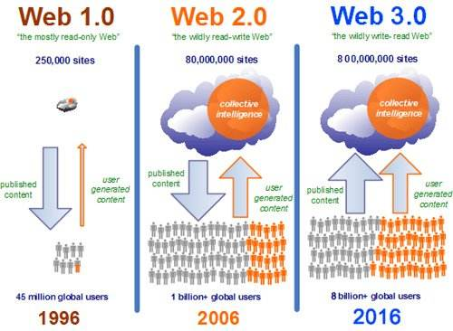

Web3.0
IPFS，星际文件系统(InterPlanetary File System)是一种内容可寻址、版本化、点对点超媒体的分布式存储、传输协议系统。其代币名字是 FIL，总共有20亿枚。分配方案为：70%作为挖矿的回报，按照6年分发一半的计算方式，前6年可以挖的FIL数量为7亿，平均每天32万个FIL。加上线性递减的方式，挖矿初期每天的区块奖励保守估计会在35万个FIL。15%作为研发费用, 6年逐步解禁；10%分配给投资者；5%预留给基金会。
web3.0的定义，现在还没有一个统一的认识，现在web3.0有好几种理解。一种认为web3.0是未来互联网的代名词，它没有特指，以微博、sns等等为特征的体现。web3.0它是代表下一浪潮的互联网。怎么样来概括它的特征？一种看法，比较现实，还是以移动互联网为基础的各种创新模式。需要来关注这一点的。在这个基础上，实际上移动互联网和社区以及视频，包括搜索，现在大家说叫及时网，这个是web3.0的一个特征，及时网络是以移动互联网为基础的，结合了sns，结合了包括其他的一些功能，一种融合形成的。这是一种观点。
第二种观点，web3.0是以互联网为代表的，以感知网络为主，拓展为人和人的这种，结合智能终端的这种交流，变成物对物，物对人。这个也是web3.0的一个主要特征。
还有一种观点，现在在移动互联网这种模式，这个东西实际上是基础数据以及信息和支持，使它结构化，开发出很多很多新的应用，这样的话，是带有移动的一种功能。这个也是web3.0的特征。
欧盟讲下一代互联网，或者是web3.0，云计算是下一代互联网的特征，投入互联网是云最高的一个概括,从这层意义看来应是雾计算，边缘计算和区块链，分布式信用的建立和生产关系的变革。
广义上说，Web3.0包含区块链的应用，是一个dAPP的时代，所有的数据属于个人，也就说，目前这些巨头不再拥有任何数据，也无法在没有用户的许可情况下进行任何挖掘，数据的价值永远属于个人，用户是数据的携带者和使作者，有一句话，说得好：这个时代的到来，使得所有的高塔（指的是FANNG和BAT）都会倒塌，替而代之的是广场和广场舞者。